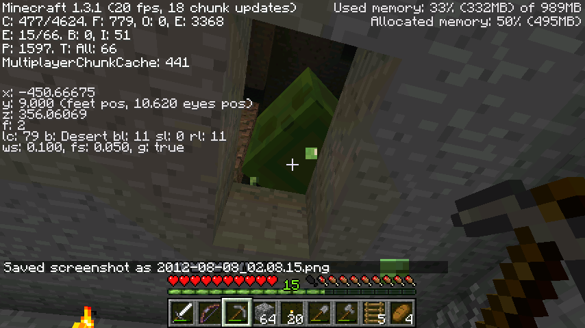
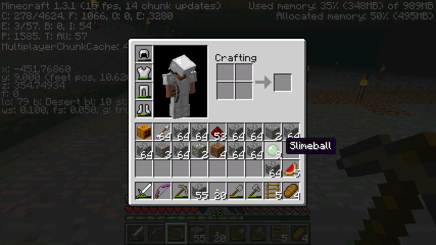

首页
上一页
10
11
12
13
14
15
15
16
17
18
19
20
下一页
末页
defanive2
无尽黑夜
14
下面一个洞穴我擦，封住继续走
570楼
2012-08-07 23:52
defanive2
无尽黑夜
14
好了艰巨的任务又要开始了
这两个方向都给挖开，挖到整个chunk都空了为止
PS 由于上面有个天然洞，于是把刷史莱姆的空间放到了y=9
571楼
2012-08-07 23:58
defanive2
无尽黑夜
14
由于网速太慢了，所以决定不用直播器了
LV30效率4附魔钻石稿，用来挖石头
这不是浪费，这是省时间。。
572楼
2012-08-08 00:14
defanive2
无尽黑夜
14
清理了chunk
一个chunk就是16x16，不过我把边界也清理了，就是17x17
总共需要挖17x17x3=867个方块，超过了钻石工具耐久的一半（750左右）
573楼
2012-08-08 00:32
defanive2
无尽黑夜
14
最后需要做的就是造一个等待点让史莱姆生成
怪物生成需要在24格之外才会生成，因此在y=9+24+1=34的地方造等待点
等一会再来看看成果
575楼
2012-08-08 00:42
defanive2
无尽黑夜
14
等了很久还是没有，看起来chunk定位错了。。
这个是最杯具的一种情况，之前挖的这么多都白挖了。。
576楼
2012-08-08 00:55
defanive2
无尽黑夜
14
再次上传一下找到史莱姆的这张图
个人认为，史莱姆既然不可能在我这个chunk，那么
根据走向，应该是在我这个chunk的前方一个chunk，也就是(x1,x2)=(352,368)
如果再挖不到的话，就可能是我身后的这个chunk了，也就是(x1,x2)=(368,384)
不过感觉前方的chunk可能性高点，所以先挖前方这个
578楼
2012-08-08 01:00
defanive2
无尽黑夜
14
回家之后带上点食物，和火柴
对于挖chunk这种大工程来说，高热量的食物还是比较好的
面包，牛肉这些，因为挖的时候对于食物的需求不即时，就没必要吃西瓜了
PS 网速貌似好了，换直播器
580楼
2012-08-08 01:06
defanive2
无尽黑夜
14
直播器的cookie还是有问题，登录之后下次开启又不会登录了，于是决定暂时不用了
这个就是我在挖的时候发现的一个洞穴及岩浆湖。。
可见在y=11挖矿才是好高度，10以下岩浆是常客
582楼
2012-08-08 01:22
defanive2
无尽黑夜
14
处理岩浆的时候不小心受伤了，不过没什么关系
583楼
2012-08-08 01:54
defanive2
无尽黑夜
14
清理完这个chunk了，看看这次能不能找到史莱姆
y=34处等待中
584楼
2012-08-08 01:55
defanive2
无尽黑夜
14
又是什么都没有，难道又定位错了么。。
等等，我听到了slime的弹跳声！
586楼
2012-08-08 02:10
defanive2
无尽黑夜
14
看天花板，看到了史莱姆的绿色颗粒！
我大概已经猜到怎么回事了。。
由于上面有个天然洞穴，很可能有一个岩浆湖，导致了亮度足够
然后史莱姆就生成在洞穴里了。。
看起来这笔帐还是要算，洞穴还是得处理
587楼
2012-08-08 02:13
defanive2
无尽黑夜
14

挖开，果然一大个史莱姆就在这里。。
588楼
2012-08-08 02:14
defanive2
无尽黑夜
14
。。史莱姆跳起来还是挺萌的。。
589楼
2012-08-08 02:15
defanive2
无尽黑夜
14

获得9个史莱姆球，鸭梨不大
590楼
2012-08-08 02:15
defanive2
无尽黑夜
14
不知道大家是对史莱姆不了解还是什么别的原因，大家都觉得史莱姆是很难找的生物
其实，找史莱姆是有方法的，当然也是靠RP因素
因为史莱姆的生成是有chunk限制的，只有部分的chunk才能生成
根据生成代码来看，只有10%是可以生成史莱姆的，而且要求在y=40以下
一个很简单的方法就是，寻找一个非常大的地下洞穴，尽量覆盖多个chunk，越多越好
然后把整个洞穴点亮，在到一定的距离范围外等待史莱姆生成
如果有史莱姆生成的话，那么就可以定位chunk了
别以为这个方法成功率很低，我们来算一下
一个chunk有10%的几率有史莱姆，也就是一个chunk有90%的几率没有史莱姆
假设你的洞穴是覆盖了10个chunk
那么这10个chunk，全部都没有史莱姆的几率就是90%的10次方
结果是多少呢？答案是34.9%
也就是说，一个覆盖10个chunk的洞穴如果用这个方法，则有65.1%的几率找到史莱姆
这个几率比绝大部分的高级附魔的几率都要高得多
虽然还是看RP，不过对于无头脑的寻找史莱姆来说，这个方法成功率要高得多
如果没有这么大的洞穴，另外一个很简单的方法就是自己开洞穴
所以说寻找史莱姆，只要有技巧，再加上点耐心和恒心，则必然成功
602楼
2012-08-08 02:26
defanive2
无尽黑夜
14
临睡之前把这个洞穴的岩浆给清理了
603楼
2012-08-08 02:36
defanive2
无尽黑夜
14
居然没发现岩浆，倒是有一点光源，已经去掉了
难道说史莱姆的生成条件变了？难道不需要光源限制了？
我擦这样就麻烦了。。
604楼
2012-08-08 02:41
defanive2
无尽黑夜
14
算了，先睡了，这些明天再搞
605楼
2012-08-08 02:42
defanive2
无尽黑夜
14
临睡之前觉得还是算了，现在就搞一下吧
把光源封了，然后等了6分钟
606楼
2012-08-08 02:55
defanive2
无尽黑夜
14
结果是2只大的和1只中的（左边是中的，右边是大的，另外一个大的在身后）
看起来1.3还是没有改变slime的生成亮度条件，这无疑是个好消息
607楼
2012-08-08 02:56
defanive2
无尽黑夜
14
一堆史莱姆，疯狂屠杀中。。
608楼
2012-08-08 02:57
defanive2
无尽黑夜
14
最后收获14个史莱姆球，加上之前的9个，已经有23个了
家里还有1个，所以现在总共有24个史莱姆球储备了
可以说史莱姆球已经是不需要再头疼的问题了
609楼
2012-08-08 02:58
defanive2
无尽黑夜
14
至此搞定了史莱姆的大部分问题了
24个史莱姆球已经够做4个地铁站了
不过我有了一个自动的史莱姆球工厂的想法
明天先在创造里面实验
大致也是很简单，都是把史莱姆杀死之后，将物品通过物品电梯送上来
610楼
2012-08-08 03:00
defanive2
无尽黑夜
14
真睡了，大家晚安
611楼
2012-08-08 03:00
defanive2
无尽黑夜
14
今天也是又停电了,,说是在换变压器,,,可能又是要到晚上才能更新了
619楼
2012-08-08 15:20
defanive2
无尽黑夜
14
今晚大概要把史莱姆场做成自动的,虽然意义不大不过就当作是挑战自己
620楼
2012-08-08 15:23
defanive2
无尽黑夜
14
说一下天然洞穴挖矿和人工矿道挖矿的优劣吧,,,两种挖矿方式从原理上并无区别,都是搜寻暴露的矿物,,,因此天然洞穴和人工矿道的暴露表面积就是影响挖矿效率的关键因素
622楼
2012-08-08 15:50
defanive2
无尽黑夜
14
同时另外一个因素也值得考虑,就是所处的y坐标,,,像钻石只在0到16生成
623楼
2012-08-08 15:52
首页
上一页
10
11
12
13
14
15
15
16
17
18
19
20
下一页
末页